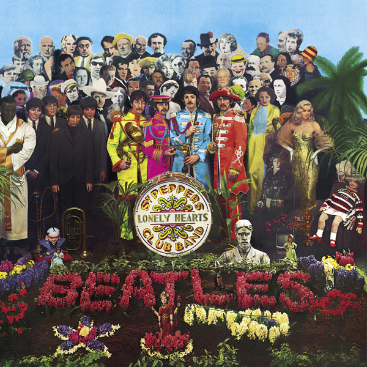

The Beatles ◆ Sgt. Pepper’s Lonely Hearts Club Band ◆ 1967
1967年，Beatles 决定不再轮回演出，人们失去了他们的踪迹，记者说他们灵感枯竭了，但他们其实在录音室里尽情玩乐，准备震惊世界。专辑里的几首歌里，我最喜欢的有 “Sgt. Pepper’s Lonely Hearts Club Band”，“Lucy in the Sky With Dimonds”，“Lovely Rita”，和 “A Day in the Life”。
豆知识：Beatles 创作这首专辑的时候，除了其他歌曲以外，特别受到了 Peach Boys 的 Pet Sounds 的影响。Pet Sounds 在当年也是很有创新的一张专辑。
豆知识：“Stawberry Field Forever” 当时也应该在这张专辑里发布的，但是经纪人觉得需要一张单曲维持热度，就把这首歌做成单曲发了。“Stawberry Field Forever” 和 “Penny Lane” 是 John Lennon 和 Paul McCartney 互相呼应竞争的两首歌：同样创新，同样讲述他们小时候常去、两个人都认识的地方。
更多豆知识请看 The Making of Sgt. Pepper。
[Verse 1]
It was twenty years ago today
Sgt. Pepper taught the band to play
They've been going in and out of style
But they're guaranteed to raise a smile
So may I introduce to you
The act you've known for all these years
Sgt. Pepper's Lonely Hearts Club Band
[Bridge]
We're Sgt. Pepper's Lonely Hearts Club Band
We hope you will enjoy the show
Sgt. Pepper's Lonely Hearts Club Band
Sit back and let the evening go
Sgt. Pepper's Lonely, Sgt. Pepper's Lonely
Sgt. Pepper's Lonely Hearts Club Band
It's wonderful to be here
It's certainly a thrill
You're such a lovely audience
We'd like to take you home with us
We'd love to take you home
[Verse 2]
I don't really want to stop the show
But I thought you might like to know
That the singer's going to sing a song
And he wants you all to sing along
So let me introduce to you
The one and only Billy Shears
And Sgt. Pepper's Lonely Hearts Club Band
[Segue: The Beatles]
Billy Shears!
[Verse 1: Ringo Starr]
What would you think if I sang out of tune?
Would you stand up and walk out on me?
Lend me your ears and I'll sing you a song
And I'll try not to sing out of key
[Chorus: Ringo Starr]
Oh, I get by with a little help from my friends
Mm, I get high with a little help from my friends
Mm, gonna try with a little help from my friends
[Verse 2: Ringo Starr & The Beatles]
What do I do when my love is away?
Does it worry you to be alone?
How do I feel by the end of the day?
Are you sad because you're on your own?
[Chorus: Ringo Starr]
No, I get by with a little help from my friends
Mm, get high with a little help from my friends
Mm, gonna try with a little help from my friends
[Bridge: Ringo Starr & The Beatles]
Do you need anybody?
I need somebody to love
Could it be anybody?
I want somebody to love
[Verse 3: Ringo Starr & The Beatles]
Would you believe in a love at first sight?
Yes, I'm certain that it happens all the time
What do you see when you turn out the light?
I can't tell you, but I know it's mine
[Chorus: Ringo Starr]
Oh, I get by with a little help from my friends
Mm, get high with a little help from my friends
Oh, I'm gonna try with a little help from my friends
[Bridge: Ringo Starr & The Beatles]
Do you need anybody?
I just need someone to love
Could it be anybody?
I want somebody to love
[Outro: Ringo Starr]
Oh, I get by with a little help from my friends
Mm, gonna try with a little help from my friends
Oh, I get high with a little help from my friends
Yes, I get by with a little help from my friends
With a little help from my friends